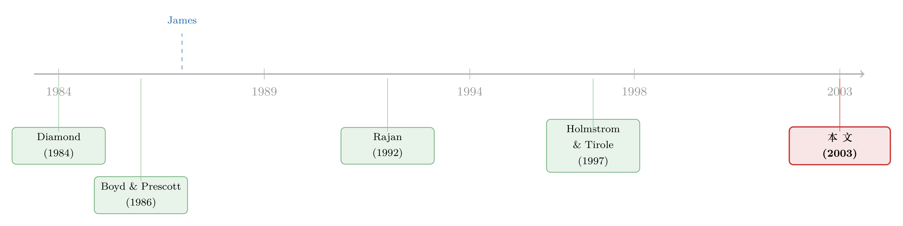

老板明知道银行会盯着他，为什么还主动把脖子伸过去？
本文读的是 Almazan & Suarez (2003, Review of Financial Studies)：在一个股东只能用「薪酬」间接驾驭经理的模型里，作者证明——当经理私下得知公司前景好时，他会主动去找银行、把自己交给银行监督。于是「选择被监督」本身成了一个高质量的信号，这为 James (1987) 那个著名的经验事实（宣布银行贷款，股价不跌反涨）提供了一个干净的理论解释。
1 一个说不通的常识
先讲一件几乎所有公司金融教科书都会提到、却很少有人追问到底的事。
1987 年，Christopher James 翻了一遍上市公司宣布签订银行贷款协议时的股价反应，得到一个让人意外的结论：市场居然是高兴的。一家公司公告自己去银行借了钱，股票随后录得显著为正的异常收益 (abnormal returns)。这和我们对「债」的直觉相反——公司缺钱、要去借钱，怎么反而是个好消息？后来 Lummer & McConnell (1989)、Best & Zhang (1993) 还争论过这究竟是不是只对「续贷」成立，但 Billet, Flannery & Garfinkel (1995) 用更干净的「新贷款」定义重做之后发现，初次借款和续贷其实没什么差别——银行贷款公告的正面效应是稳健的。
事实摆在那里，可解释它并不容易。早期最自然的一条路是「筛选」(screening)：银行有评估企业的独门本事，银行肯放贷，等于替市场背书说「这家公司不错」。Boyd & Prescott (1986)、Diamond (1991) 都是这个味道。
但本文作者偏偏不走这条路。他们盯住了另一个更扎心、也更被忽略的问题——
站在经理（而不是股东）的角度看，银行监督根本是一件坏事。
接着，一个自然的问题就冒出来了：在所有权与控制权分离的上市公司里，监督的成本主要落在经理头上（他从此没法再偷懒、没法再揩油），而监督带来的价值增量，原则上归股东。那么，一个理性自利、又掌握着融资决定权的经理，凭什么要主动把自己送进银行的监控视野？
这正是 Almazan & Suarez (2003) 想回答的。而他们给的答案，漂亮就漂亮在：它把上面两件看似无关的事——「为什么经理愿意被监督」和「为什么市场喜欢银行贷款」——用同一套逻辑一次性串了起来。
（关于「银行融资本身能给公司估值加分」这条线，后来在并购情境里也有专门的检验，可参见《并购的钱从哪儿来：当一笔银行贷款替收购方做了「背书」》。）
2 模型：把「监督」和「薪酬」放进同一道题
这是一篇彻头彻尾的理论论文，所以我们得把模型的骨架老老实实搭出来。好在它的设定极其干净，干净到每一个假设都对应着一句大白话。
主角与技术。 一家上市公司，风险中性经济，市场利率标准化为零。公司由分散的小股东持有、由一个经理在跑。经理没有自有财富、受有限责任保护、保留效用为零——换句话说，他一无所有，但也亏不了。
公司有一个项目，需要初始投资 \(I\)，成功则产生现金流 \(x=R\)，失败则 \(x=0\)。成功的概率取决于两件事：项目的类型 \(\pi\)（高质量 \(\pi_H\) 还是低质量 \(\pi_L\)）和经理的努力 \(e\)（\(e=1\) 勤勉，\(e=0\) 偷懒揩油）。终端现金流的分布写作：
$$ x=\begin{cases} R, & \text{with probability } \pi+\Delta e \\ 0, & \text{with probability } 1-\pi-\Delta e \end{cases} $$
其中参数满足
$$ 0<\Delta<1-\pi_H<1-\pi_L<1 . $$
这行不等式里藏着两个信息：一是 \(\pi_H>\pi_L\)（高类型成功率更高，理所当然）；二是努力的边际贡献 \(\Delta\) 是正的——经理选 \(e=1\) 而非 \(e=0\)，能带来 \(\Delta R\) 的期望现金流增量。
核心摩擦：偷懒能换私利，而银行能压住这份私利。 经理一旦选 \(e=0\)，就能从项目里攫取一笔私人收益 (private benefits) \(C_f\)，这里 \(f\) 标记融资方式：市场融资 \(f=m\) 还是银行融资 \(f=b\)。作者沿用 Holmstrom & Tirole (1997) 的视角，假设
$$
C_b 也就是说，银行监督会削减经理揩油的空间。这是全篇唯一一个关于「银行有什么用」的假设——注意，它和「银行更会看项目」毫无关系，银行在这里不掌握任何信息优势，它只干一件经理讨厌的事：盯着他。 效率与可行性。 两个边界条件让问题不至于退化：努力总是有效率的，\(\Delta R>C_m\)（即便在监督最松的市场融资下，让经理勤勉也比让他揩油更划算）；项目总是可行的，\(\pi_L R>I\)（哪怕最差的类型、最坏的努力，也不至于血本无归）。 信息结构——这是全部张力的来源。 类型 \(\pi\) 事前是不确定的：以概率 \(\gamma\) 为 \(\pi_L\)，以 \(1-\gamma\) 为 \(\pi_H\)。经理被雇来时，\(\pi\) 尚未揭晓；一旦上任，他私下观察到 \(\pi\)，然后才决定融资方式 \(f\)（公开可见）和努力 \(e\)（不可见）。于是这个模型同时塞进了两个经典难题：一个关于 \(\pi\) 的逆向选择（私人信息），一个关于 \(e\) 的道德风险（隐藏行动）。股东对付它们的唯一武器，是一份只能依赖可观测变量 \(f\) 和 \(x\) 的薪酬合同。 请记住这条时间线：先签合同 → 经理私下学到 \(\pi\) → 经理挑 \(f\) 和 \(e\) → 现金流 \(x\) 实现、合同兑付。经理「学到好消息」发生在「选择融资方式」之前——正是这个顺序，让融资选择有机会承载信息。 股东要解的，是在两类约束（参与约束 + 激励相容约束）下最大化公司净值减去薪酬成本。我们先把经理自己的账本写清楚。给定行动 \(a\) 和薪酬方案 \(w\)，一个 \(\pi\) 类型经理的期望效用是： 这个式子把经理的取舍说得明明白白：他要么靠勤勉去换更高的「成功概率 × 报酬」，要么靠偷懒去抓那笔 \(C_f\)。股东要做的，就是把第一项的报酬结构设计得足够诱人，让经理甘愿放弃第三项。 顺带一提，这里有个巧妙的恒等式：\(V(a,w\mid\pi)+U(a,w\mid\pi)=(\pi+\Delta e)R+(1-e)C_f\)。也就是说，一旦「类型 + 努力 + 融资方式」定下来，公司的总剩余就定了，薪酬 \(w\) 只决定这块饼怎么在股东和经理之间切。这让作者可以把 16 种可能的配置先按「总剩余」筛一遍，再谈分配。 第一块积木——奖金必须够大（Proposition 1）。 要让经理选 \(e=1\)，充分必要条件是成功时的奖金满足 $$
w_R\big(\pi,f(\pi)\big)-w_0\big(\pi,f(\pi)\big)\;\ge\;\frac{C_{f(\pi)}}{\Delta}.
$$ 左边是「成功相对失败」多拿的那部分（奖金），右边是揩油诱惑除以努力的边际贡献。直觉很顺：要把经理从偷懒掰到勤勉，奖金带来的额外收入必须盖过他放弃的私利。 关键的一步在于这里： 既然门槛是 \(C_{f}/\Delta\)，而银行能把 \(C_b\) 压到比 \(C_m\) 低，那么在银行融资下，激励经理勤勉所需的奖金就更便宜。银行监督和激励薪酬不是替代品，而是互补品——银行替股东把「揩油的诱惑」先削掉一截，股东再用更小的奖金把剩下的诱惑摆平。这是全文的发动机。 第二、三块积木——配对（Propositions 2 & 3）。 作者接着证明，16 种配置里绝大多数都是次优的，只剩三个候选： 两条放在一起，浮现出一个内生的三角关系：激励薪酬 ⟷ 银行监督 ⟷ 高质量项目。请特别注意作者反复强调的一点：这个绑定不是假设出来的技术互补——从设定 $(1)$ 和 $(3)$ 看，努力对现金流的边际效应、融资方式对私利的影响，都与 \(\pi\) 无关。绑定纯粹是逆向选择与道德风险在最优合同设计中交互出来的产物。 于是只剩三个候选配置：市场—市场（mm，记作 A1）、市场—银行（mb，A4）、银行—银行（bb，A16）。 接下来是论文的高潮。作者构造了实现 mb 和 bb 的最低成本薪酬方案，再比较哪一种对股东更划算。为聚焦，他们加了一个条件 $(10)$： $$
C_m>(\pi_H+\Delta)\frac{C_b}{\Delta},
$$ 它强化了 \(C_b 分离均衡（mb）。 在方案 \(w^{mb}\) 下： $$
w_0(z,b)=C_m-(\pi_H+\Delta)\frac{C_b}{\Delta},\qquad w_R(z,b)=C_m+(1-\pi_H-\Delta)\frac{C_b}{\Delta},
$$ 而市场融资下的报酬全为零，\(w_0(z,m)=w_R(z,m)=0\)。这套合同把低质量项目留在市场（零薪酬成本、放任经理揩油、成功率为 \(\pi_L\)），把高质量项目吸引到银行（监督 + 激励、成功率为 \(\pi_H+\Delta\)），而吸引它去银行的代价仅仅是 \(C_m\)。 汇聚均衡（bb）。 在方案 \(w^{bb}\) 下，把上面式子里的 \(\pi_H\) 换成 \(\pi_L\)，所有类型都被吸引到银行。代价是：低质量经理拿到 \(C_m\)，而高质量经理会拿到 $$
C_m+(\pi_H-\pi_L)\frac{C_b}{\Delta},
$$ 多出来的 \((\pi_H-\pi_L)\frac{C_b}{\Delta}\) 是一笔信息租——为了在汇聚均衡里把连低质量经理都按到银行 \((b,1)\)，奖金必须设得够高，而同一份奖金落到更容易成功的高质量经理手上，就溢出成了他白赚的租金。 而 mm 为什么被 mb 击败？mm 可以零成本实现（所有报酬设为零），产生事前价值 \([\gamma\pi_L+(1-\gamma)\pi_H]R\)；但 \(w^{mb}\) 只花 \(C_m\) 就让高质量项目勤勉起来，于是 mb 多创造了 \((1-\gamma)(\Delta R-C_m)>0\) 的价值。所以真正的竞争只在 mb（分离）与 bb（汇聚） 之间。 于是反转出现了。 在分离均衡里，发生了一件设计者一开始并没有刻意追求、却自动长出来的事： 只有高质量公司会去银行。 公司不可观测的盈利能力、银行监督、激励薪酬，被最优合同内生地焊在了一起。这条关联让「选择银行融资」摇身一变，成了「我是高质量」的可信信号。市场看到一家公司宣布银行贷款，理性地把它的类型预期从混合状态上调到 \(\pi_H\)——股价于是上涨。这，就是 James (1987) 那个正异常收益的微观来源。银行没有任何信息优势，它甚至什么都没说；说话的是经理「敢于把自己交出去」这个动作本身。 更妙的是，作者在第 5 节进一步说明：这套依赖 \(f\) 的合同，可以用纯粹基于股价表现的市场化薪酬 (market-based compensation) 来实现——公告后的估值反应，恰好替股东把激励发了下去。这一步让模型从「理论上可行」走到了「看起来像现实」。 （经理用融资结构替自己谋私利、或股东用债务/监督反过来约束经理，这条线在其他论文里也反复出现，可参见《借公开债，是为了躲开银行的眼睛》与《老板为什么偏爱「说不清」的项目？——一笔债，如何替股东堵死这条暗路》。） 一个好模型的标志，是它能挤出一些原本没人想到去验证的结论。本文至少有两条： 其一，融资来源与薪酬敏感度挂钩。 因为银行融资天然和高激励配对，模型预测：用银行融资的公司，往往有更大的薪酬—业绩敏感度 (pay-performance sensitivity)。这把「资本结构」和「高管合同」两张原本各管各的表，钉在了一起。 其二，逻辑可外推到一切「自愿被监督」的场景。 作者特意点出：凡是经理主动提出、其主要后果是「缩小自己偏离价值最大化时能捞到的私利」的变化——改治理、改会计、改审计、改内部组织——都能套用同一套信号逻辑。它们的公告之所以可能引发股价上涨，道理与银行贷款一模一样。 （把「努力、风险与债务」在一份合同里同时定下来的思路，可对照《给「好经理」配高杠杆：一道把努力、风险与债同时定下来的方程》。） 这篇论文坐在两股银行学文献的交汇处，理清它的来路，才能看清它补上的是哪一块。 最早的源头是 Diamond (1984) 的「委托监督」(delegated monitoring)——银行作为代理监督者存在的理由。但那一代模型（连同 Rajan (1992)、Holmstrom & Tirole (1997) 这些监督模型）几乎都建立在创业者模型之上：公司由所有者自己经营，谁监督、谁受益是同一个人，于是「只要监督能提升公司价值，创业者就会让渡控制权」顺理成章。  另一股是筛选模型：Boyd & Prescott (1986)、Diamond (1991) 让「贷款成功」成为公司盈利能力的好消息，但它依赖银行评估企业的信息优势。 而横在中间、逼着所有人解释的经验事实，是 James (1987)：银行贷款公告的正异常收益。 本文的位置就清楚了：它既不靠创业者模型里那种「监督者与受益者合一」的便利（它处理的恰恰是所有权与控制权分离、经理讨厌被监督的上市公司），也不靠筛选模型里银行的信息优势。它的全部新意，是往那些「已经成功解释了银行贷款可观测决定因素」的监督模型里，加进一层不可观测的异质性（私人信息），于是同一个框架顺带也能容纳 James (1987) 的公告效应。一句话——把逆向选择请进监督模型。 Q：这和「筛选模型」到底差在哪？不都是说银行贷款=好消息吗？ 差在好消息的来源。筛选模型里，好消息来自银行的眼睛——银行看懂了这家公司。本文里，银行是「睁眼瞎」，它没有任何信息优势；好消息来自经理的脚——是经理在私下得知自己是高质量后，主动选择把脖子伸进监督的套子。信号的载体不是「银行批了」，而是「经理敢被管」。 Q：可现实里也有大把烂公司去借银行贷款，分离均衡岂不是被证伪了？ 模型对此其实是诚实的：它明确给出了两种均衡。在汇聚均衡（bb）里，所有类型都涌向银行，此时银行贷款不再分离类型、信号价值消失。哪种均衡出现取决于参数（\(\gamma\)、\(C_m-C_b\)、\(\Delta\) 等）。所以「正异常收益」是分离均衡的特征，不是放之四海皆准的铁律——这反而给了实证一个可检验的横截面预测。 Q：条件 $(10)$ 是不是太巧、专门为结论量身定做的？ 它确实是个简化假设，作用是保证「即便对高类型，诱导其选银行也要额外花钱」，从而让分析聚焦。作者在脚注里坦承，若 $(10)$ 不成立，需要对 Proposition 4、5 做点推广，结论定性不变，只是当 \(C_m\) 逼近 \(\Delta R\) 时，可能出现两类都不勤勉的退化情形，那时 mb 对 mm 的优势不再成立。算是把边界交代清楚了。 Q：经理「无财富、有限责任、保留效用为零」，会不会把问题设得太省事？ 这套设定是为了让经理永远能靠 \((m,0)\) 白拿 \(C_m\)，从而把参与约束变得平凡（总能满足），让舞台留给激励相容约束。技术上它接近 Sappington (1983) 那类「对风险中性代理人的事后惩罚有上限」的问题。好处是干净，代价是它抽掉了经理的财富异质性——而现实中高管的个人财富、风险厌恶恰恰会改写激励合同的形状。 Q：为什么报酬可以「依赖融资方式 \(f\)」？这在现实里见过吗？ 这是模型在数学上最讨巧、也最容易被质疑的一步。作者自己也觉得「让薪酬显式挂钩 \(f\)」有点反事实，所以专门在第 5 节证明：最优合同可以只用基于股价表现的薪酬等价地实现——公告后的估值反应替你把激励发了下去。这一步是把模型从黑板拉向现实的关键缝合。 Q：它能解释续贷和初次借款没差别（Billet et al. 1995）这个事实吗？ 能，而且是它相对「重谈判/财务困境」那一支文献（Detragiache 1994、Gorton & Kahn 2000）的优势所在。那一支主要解释财务困境公司续贷时的公告效应。本文的机制不依赖困境、也不依赖续贷——它对财务健康的上市公司、初次借款同样成立，这与 Billet et al. (1995) 的「初次与续贷无显著差别」恰好吻合。 1. 把信号机制搬到公司债一级市场。 【经济故事】本文的核心是「主动接受更强监督 = 高质量信号」。在公司债里，发行附带更严限制性条款 (covenants)、或选择有抵押 (secured) 结构，本质也是经理自愿戴上更紧的「紧箍咒」。模型预测：自愿选择更强约束的发行，应当伴随更小的发行折价或更正面的二级市场反应。
【可行性】中。需要 Mergent FISD 的条款与抵押数据 + TRACE 的二级价格，识别难点在于条款是内生选择的——可考虑用评级临界、或条款标准化的外生冲击做工具。数据现成，识别要下功夫。 2. 外资持有人会削弱还是放大这个信号？ 【经济故事】本文假设市场理性地把「去银行」解读为高质量。但若边际投资者是信息劣势的外资，信号的传导会变慢、变弱吗？还是外资反而更依赖银行这种「制度化背书」？这把信号定价和投资者结构联系了起来。
【可行性】中。需要跨国的银行贷款公告样本 + 外资持股（如可投资度）数据，用 FactSet/EPFR 拼持有人结构。识别可借各国对外资开放的时点差异。挑战在于跨国会计与披露口径的统一。 3. 薪酬敏感度与融资来源的横截面检验，能否做成因果？ 【经济故事】模型给出一条干净预测：用银行融资的公司，薪酬—业绩敏感度更大。这条几乎没被正面检验过。
【可行性】高（相关性）/ 低（因果）。ExecuComp + Dealscan + Compustat 即可算出 delta/vega 与银行贷款占比的相关性，描述性证据唾手可得。难的是因果方向——二者都被「公司质量」同时驱动，需要一个只影响银行可得性、不直接影响薪酬的外生冲击（如银行并购导致的关系中断）。 4. 流动性视角的再诠释。 【经济故事】本文里「市场融资」是放任、「银行融资」是约束。但若把市场融资换成「更易交易、更分散的公开债」，经理选择留在公开市场，是否也在为「将来更易再融资/更高流动性」买单？把监督成本和流动性收益放进同一个权衡，可能改写均衡。
【可行性】中。理论上是对本文的直接扩展（给市场融资加一个流动性收益项）；实证上需要公开债与银行债的二级流动性度量（如 size-adapted 流动性指标）。属于「理论先行、实证跟上」的题。 贡献。 这篇论文的优雅在于「一石二鸟」：它没有给银行额外的信息超能力，只承认一个朴素事实——银行监督让经理少揩油——然后让逆向选择和道德风险在最优合同里自己交互，内生地长出「银行融资 = 高质量信号」的关联，一举解释了「经理为何自愿被监督」与「市场为何偏爱银行贷款」两件事。把私人信息塞进监督模型这一步，看似只是加了一层异质性，却让一类原本各管一摊的模型第一次同时容纳了 James (1987) 的公告效应。这是真正的「四两拨千斤」。 对识别（机制）的担忧。 作为纯理论，它的「识别」是逻辑自洽性而非计量因果，但仍有几处值得追问。其一，薪酬显式挂钩融资方式 \(f\) 终究反事实，虽然第 5 节用市场化薪酬补救，但「公告反应精确等于所需激励」这个等价是在很强的设定下才成立的。其二，多重均衡（mb vs. bb）意味着模型对「正异常收益」只是条件性预测——它无法告诉你给定一家公司会落在哪个均衡，这削弱了可证伪性。其三，经理零财富、风险中性的设定抽掉了高管激励里最现实的两个维度（财富与风险厌恶），而这两者恰恰是实证薪酬文献的核心。 后续想看到什么。 最想看到的，是有人把这条「自愿接受监督即信号」的逻辑拉到公司债与信用市场做正面检验——尤其是条款强度、抵押选择与发行折价之间，是否真有模型预言的负相关；以及那条几乎无人验证的「银行融资 ⟷ 高薪酬敏感度」横截面预测，能不能找到一个干净的外生冲击把它从相关性推到因果。理论已经把话说得很满，现在轮到数据了。3 把经理的算盘摊开
4 两种均衡：谁去银行，谁留在市场
5 它顺手还预言了什么
6 文献脉络
7 评论与延伸（Q&A + 研究方向）
(a) 几个可能的疑问
(b) 几个可能的研究问题与提案
8 我的判断
参考文献